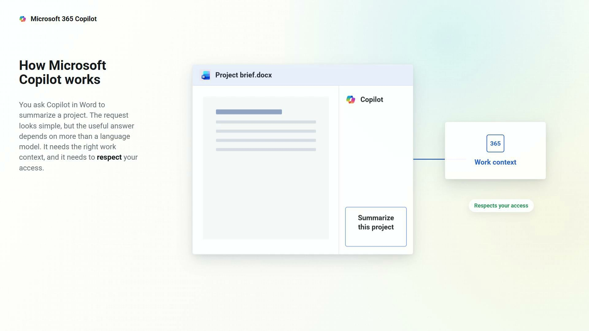
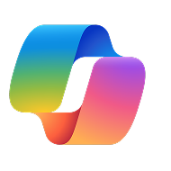
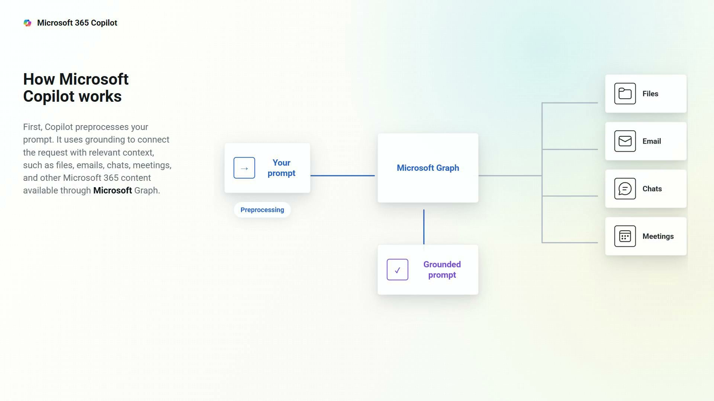
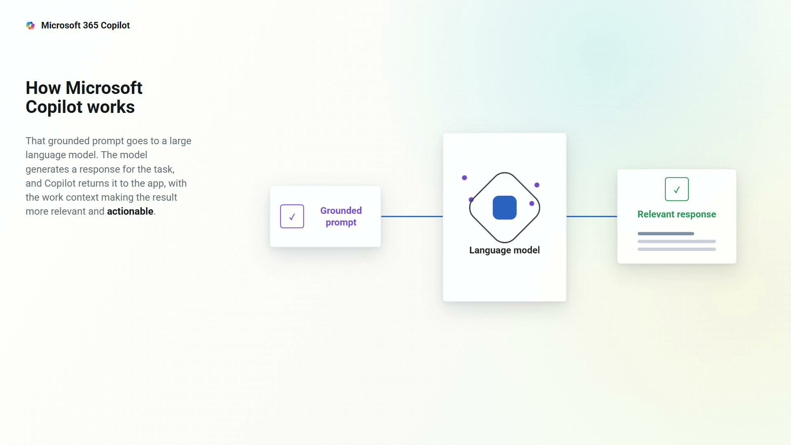
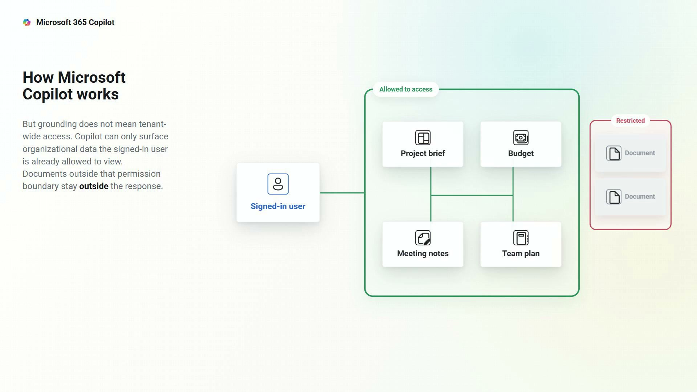
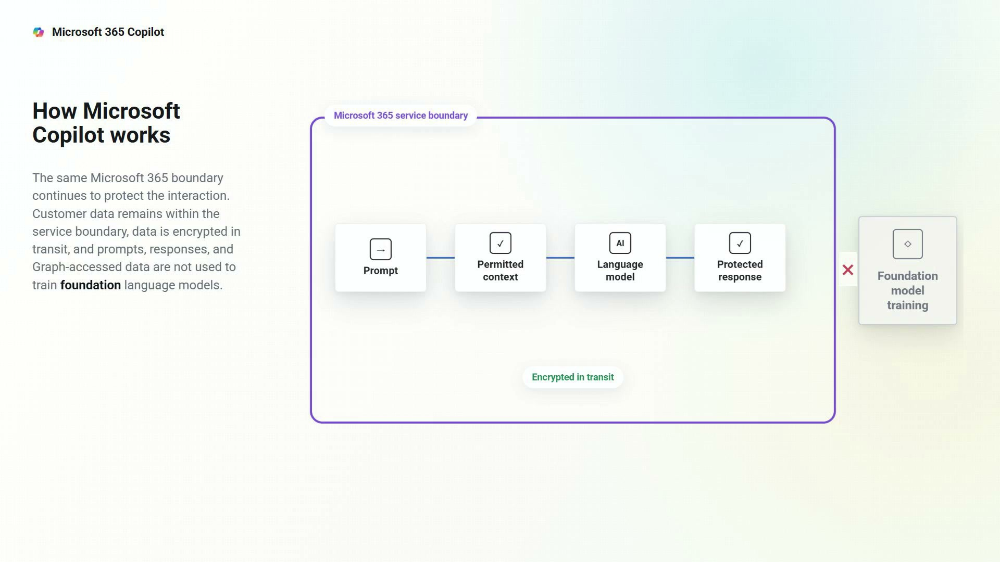
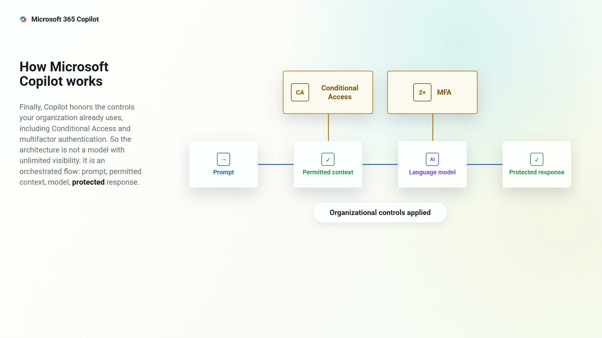

01Set up the problem
A simple request needs the right work context and must respect the user’s access.
Static wide composition; UI and context reveal

Microsoft 365 CopilotA simple request becomes a grounded, permission-aware, protected response through Microsoft 365 Copilot.

01A simple request needs the right work context and must respect the user’s access.

02Copilot preprocesses the request and connects it to relevant Microsoft 365 content through Graph.

03The grounded prompt reaches the model and returns as a relevant, actionable response.

04Only organizational content the signed-in user can already access is eligible for grounding.

05Data stays inside the Microsoft 365 boundary, encrypted and excluded from foundation-model training.

06Conditional Access and MFA govern the complete orchestrated flow from prompt to protected response.